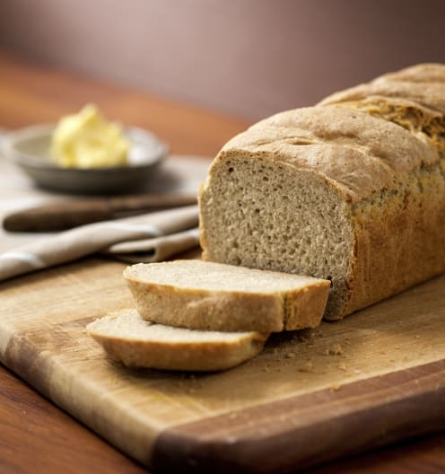

Basic Bread

Description:
This Basic Bread Recipe is of easy difficulty. It has a preperation time of 30 minutes.
It takes a total time of 1hr 35 mins. It has a serving size of 12 portions.
Ingredients:
- 100 g wheat grains
- 300 g water, plus extra for brushing
- 2 tsp dried instant yeast or 20 g fresh yeast, crumbled
- 20 g olive oil, plus extra for greasing
- 400 - 420 g baker's flour, plus extra for dusting
- 1 tsp salt
- mixed seeds (e.g. sunflower seeds, sesame seeds), for sprinkling (optional)
Steps:
- Place wheat grains into a mixing bowl and mill 1 min/speed 9.
Transfer wheat flower into a bowl and set aside.
- Place water and yeast into mixing bowl and heat 2 min/37°C/speed 1
- Add olive oil, baker's flour, salt and reserved wheat flour and mix 6sec/speed 6,
then knead dough/2 min
- Transfer dough onto silicone bread mat or flour work surface and work into a ball.
Wrap in silicone bread mat or place into a bowl and cover with plastic wrap or a kitchen
towl. Leave to prove in warm placcce until doubled in size (approx. 30 minutes).
- Preheat oven to 200°C. Grease a deep-sided loaf tin. Knock down dough,place into
prepared tin, brush with a little water and sprinkle with seds(optional). Leave to prove
for a further 20 minutes. Bake for 20-30 minutes (200°C) or until golden brown. Bread
should sound hollow when tapped on the underside of the loaf
- Allow to cool in tin for 5 minutes then transfer onto a wire rack. Serve warm or allow
to cool completely, then transfer into a sealable contaiuner until ready to serve.